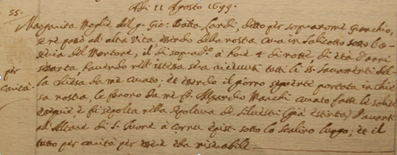

|
 |
2 luglio 1665
giovedì
|
- prima di iniziare la lettura, si consiglia di leggere l'introduzione -
Per questo Palio la Biccherna non emise alcun bando teso a imporre ai barrocciai delle Masse di Siena il trasporto della terra in Piazza, in quanto si presume che questa vi fosse rimasta stesa sin da giugno, quando si era corso lo Straordinario voluto dal Casino dei Nobili.
Il Comune riconosce la vittoria alla Torre, mentre il Bandini, l'accredita all'Onda. Anche per il nome del fantino vittorioso sorgono divergenze tra gli storici, ma è pressoché certo che a vincere fu Granchio, il quale
adoperò i proventi del premio per convolare a nozze.
Granchio è uno dei pochi fantini di quel periodo del quale è stato possibile risalire alla sua vera identità. Vi siamo giunti attraverso il libro dei morti di San Martino e in particolare in occasione della scomparsa avvenuta l'11 agosto 1699 di "Margherita, moglie del fu Giovan Battista Landi detto per soprannome Granchio"1.
Dagli Stati delle Anime del 16722, e dagli Incarti Matrimoniali3 si apprende che nato intorno al 1640 a San Giovanni Battista a Cerreto, che faceva il ciabattino e che viveva accanto all'Osteria del Montone, cura di San Martino.
La fama che Granchio si era conquistata è significativa e gli è valsa l'attribuzione di nove vittorie che pare abbia conseguito fra il 1665 e il 1685, oltre ad altre tre riportate a Cetinale.
A questo Palio prese parte il Bruco, come venne specificato nella richiesta che la Contrada "et homini del Bruco"4 avanzarono al Governatore di Siena, supplicandolo affinché concedesse un salvacondotto per il giorno “della prossima Festa della Madonna del 2 luglio” al giovane alfiere Giuseppe Fancelli5, carcerato per aver ucciso l’orefice Michelangelo Recchi la sera del 12 giugno.

NOTE:
[1] AAS, Defunti di San Martino 1325, 11 agosto 1699
[2] AAS, Stati delle Anime di San Martino 2785, c.s.n.
[3] AAS, Incarti Matrimoniali 6025
[4] ASS, Governatore affari risoluti 26, 25 giugno 1665, c.s.n.
[5] Giuseppe di Antonio Fancelli nacque a Siena il 14 settembre 1641

ABBREVIAZIONI BIBLIOGRAFICHE


RIEPILOGO
VITTORIE
DAL 1633
AL 1691

|
|